Austin
美国 · 奥斯汀等地 · 全日制
Alpha School
alpha.school · 入学超 1000 人

AI 对教育变革的分析及选择
先看一天怎么过，再看成绩广告。
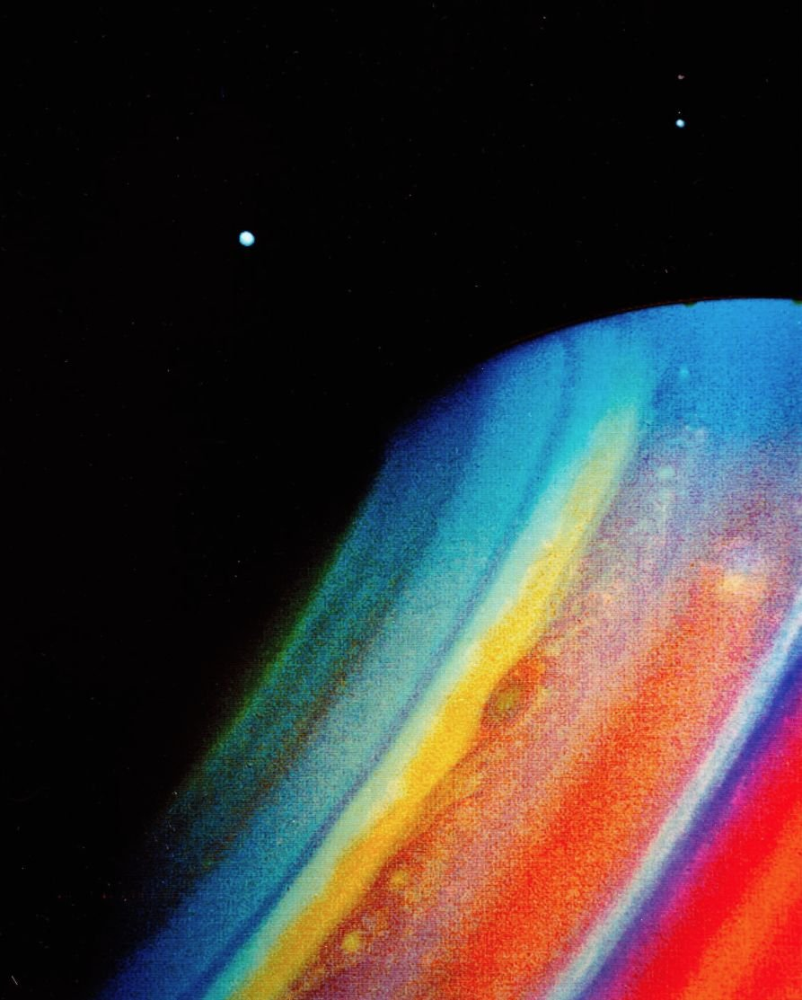


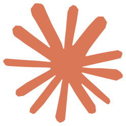
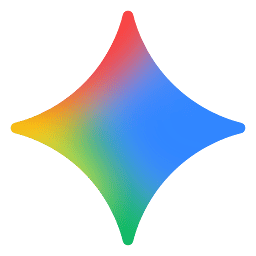
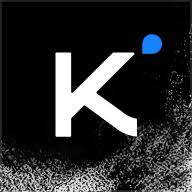
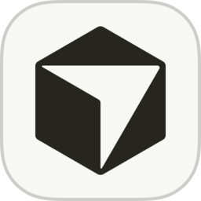
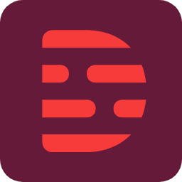
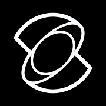
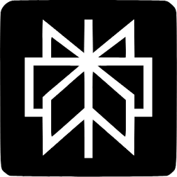
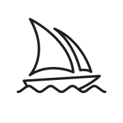
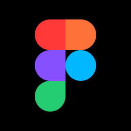
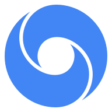
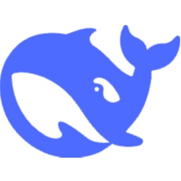
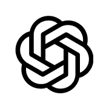
截至 2026.9。Manus 已不适合进课堂（收购后拆分、数据删除）。课上会用到其中若干，不绑死某一个。
一句话这些软件一两年就会换一批。要练的是会选、会查、敢负责，不是背某一个 App。
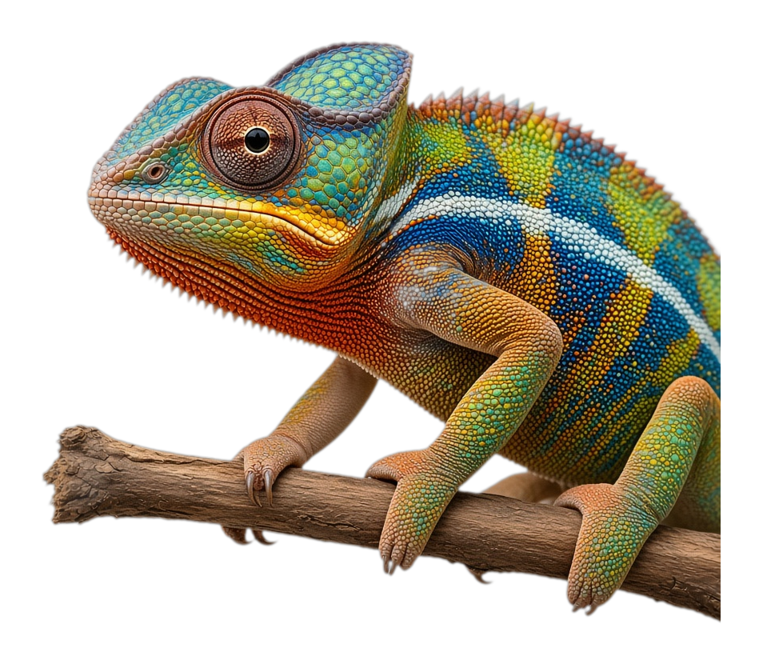
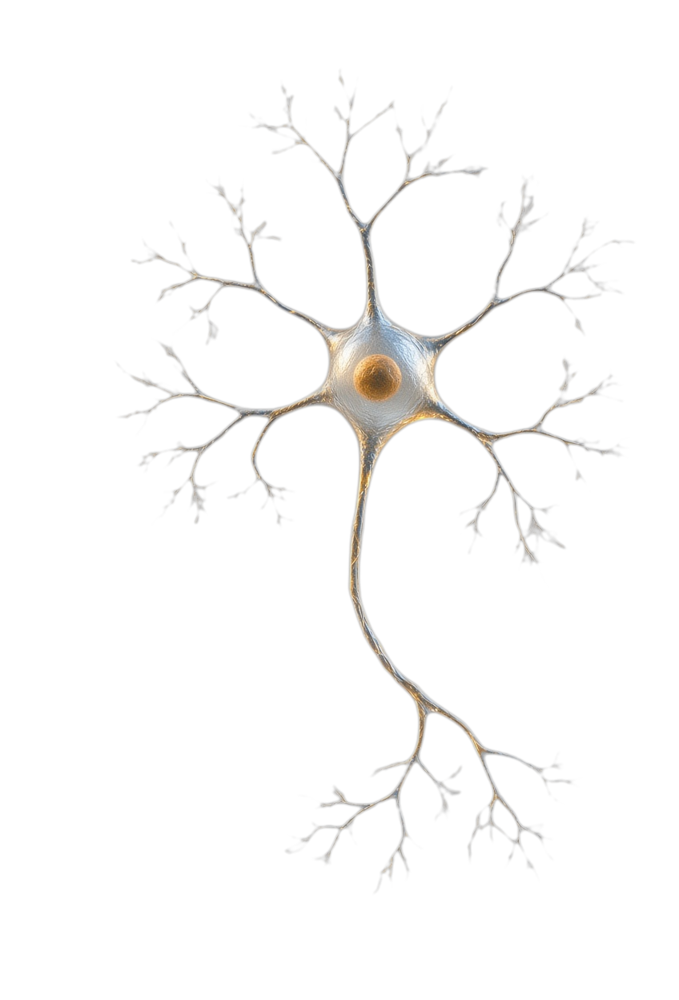
学本源：历史、逻辑哲学、数学、基础物理。先问世界怎么运转，再谈应用。
能把分析内化成自己的判断，也能当众讲清楚。想得清和说得出，是一件事。
能发现、感知真实问题；把问题定义清楚，再动手解决。世界就是实验室。
让爱好、产品、创作能持续下去。懂一点社会经济，懂公司和一群人怎么协作。
AI 是默认的思考与工作环境。会选、会查、敢负责；能力可以上移，责任不交出去。
这是 Natural Computation 的能力口径，用来收敛培养目标。实验校可以对照，但不跟着他们的成绩广告走。
一句话底座是万物机理。上面是思想、真实世界、可持续。AI 是默认环境，不是目的。
Attention Residuals 共一作（arXiv 2603.15031），架构思路进入 Kimi K3。

面向未上大学的美国高中毕业生：带薪约 4 个月实习；SAT ≥1460 / ACT ≥33。
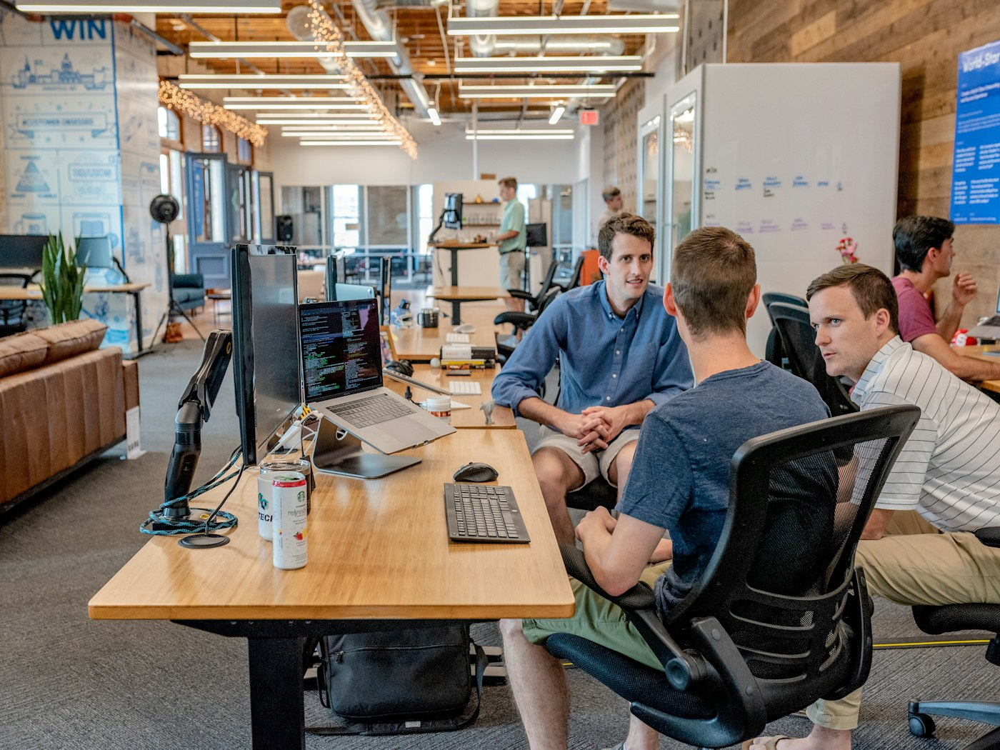
South Park Commons 领投约 100 万美元；推迟 GCSE，赴旧金山推进产品。
高中阶段做出私募市场分析产品；8VC、Soma、SoftBank 等参与种子轮。
点击任一案例放大聚焦 · 再点空白或按 Esc 复位
一句话这四个孩子不是模板。共同点只有：真问题、真产品、当面讲得清。